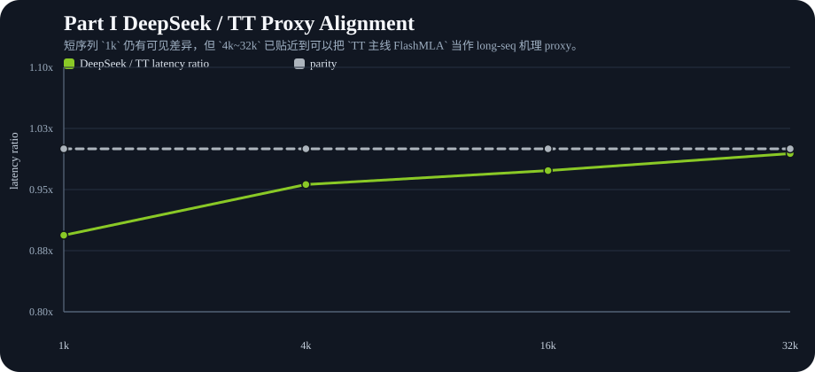
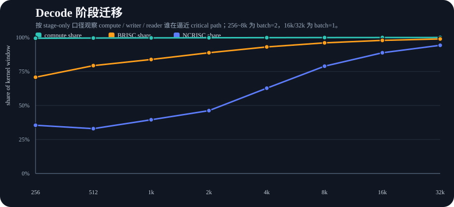
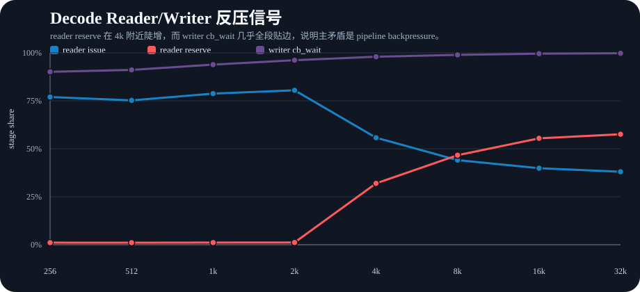
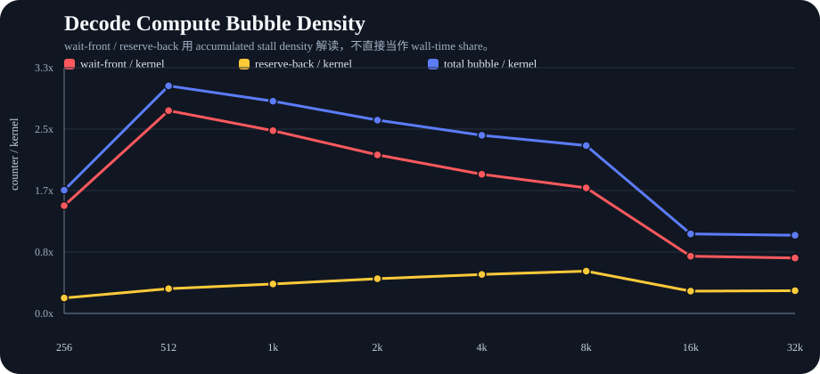
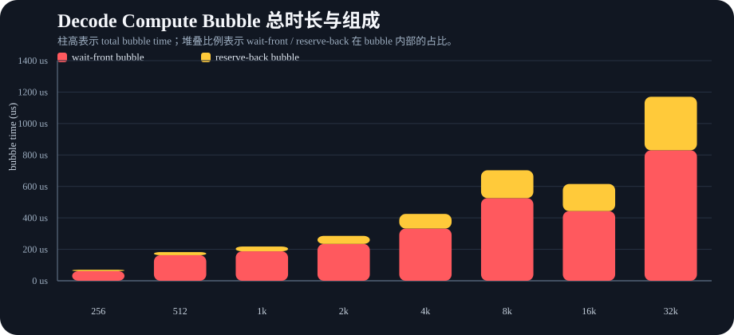
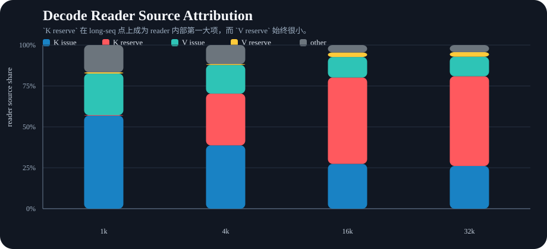
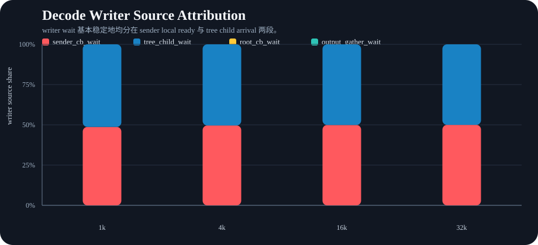
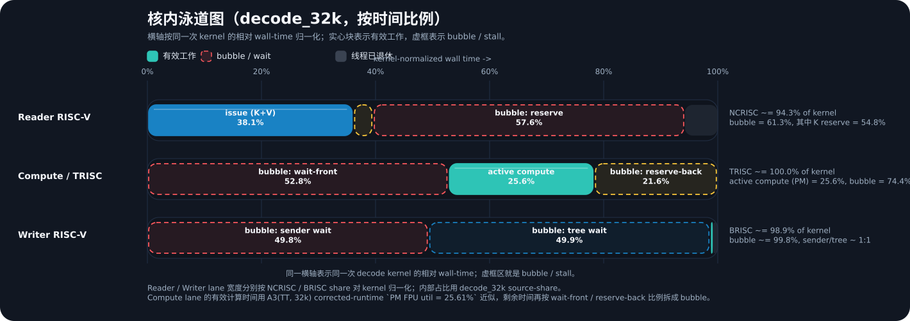
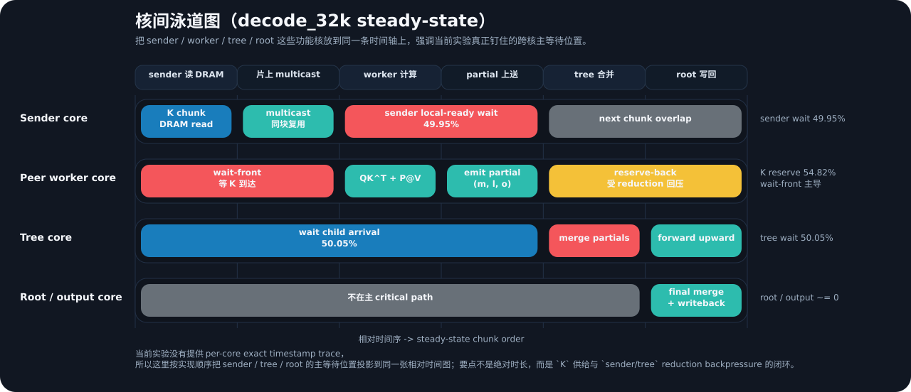
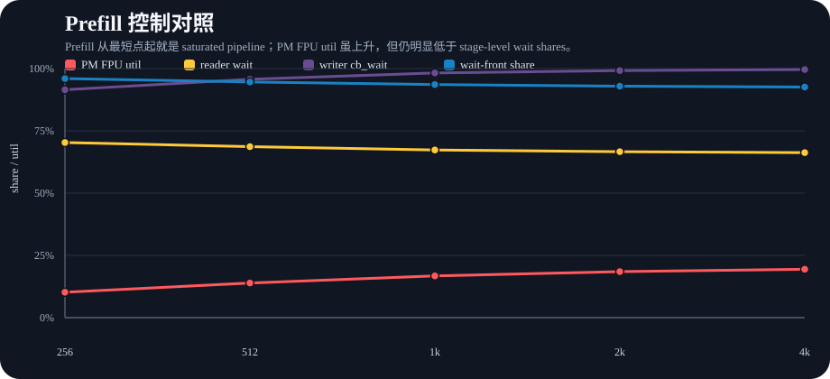

这页把 Part II 需要的 stage-level、source-level、compute bubble 与 prefill PM 对照统一收拢到一个目录下，同时显式对齐新的 Part I 叙事：`DeepSeek FlashMLA` 是主方法，`TT 主线 FlashMLA` 的 dense characterization 只作为 long-seq mechanism proxy。










说明：decode 图中的 `wait-front / reserve-back` 统一按 accumulated stall density 解读。新增的核内 / 核间泳道图按 `decode_32k` representative steady-state 绘制，强调相对先后与主等待位置，不等价于 exact timestamp trace。Part II 的 decode 仍使用 mixed-batch characterization：`256~8k=batch=2`，`16k/32k=batch=1`。`DeepSeek FlashMLA` 的 direct representative-point profiler 仍是后续可补资产。